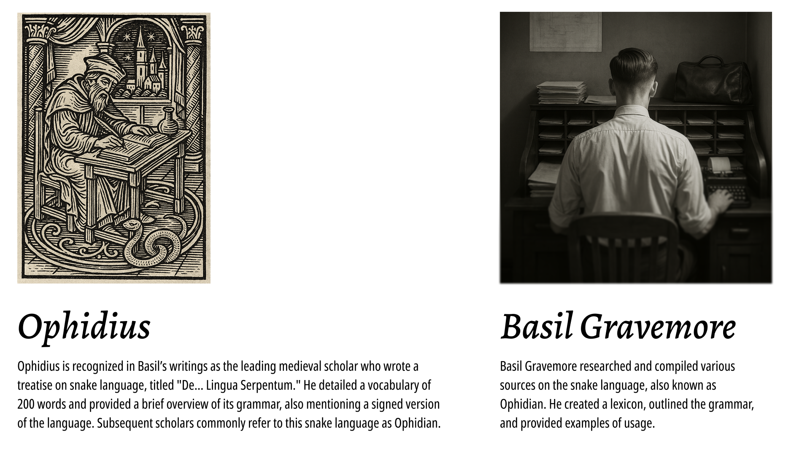

Ophidian
Змеиный / Ophidian
I wanted to create a snake language that other people could actually use. So while developing it, I try to balance the vibe and aesthetic with clarity and ease of use.
Я хотел создать змеиный язык, которым другие люди действительно могли бы пользоваться. Поэтому, разрабатывая его, я стараюсь балансировать между атмосферой и эстетикой, а также ясностью и удобством использования.
The lore is intentionally vague so others can build on it. In short, it goes like this.
Лор намеренно расплывчатый, чтобы другие могли его развивать. Вкратце он такой.
Lore
Лор
Since the beginning of time, there was a snake cult that used a special language to speak with gods, spirits, and living reptiles. It was passed from priests to disciples and believed to have magical properties. Over time, it became obscure and almost forgotten.
С начала времен существовал змеиный культ, использовавший особый язык для общения с богами, духами и живыми рептилиями. Он передавался от жрецов к ученикам и считался магическим. Со временем он стал малоизвестным и почти забылся.
Recently, I obtained a large collection of notebooks, letters, and other documents from Basil Gravemore, who was the only known researcher of the snake language. In my free time, I’m organizing his archive and trying to make sense of the entire system.
Недавно я получил большую коллекцию записных книжек, писем и других документов от Бэзила Грейвмора — единственного известного исследователя змеиного языка. В свободное время я разбираю его архив и пытаюсь понять всю систему.
In the documents, a prominent half-mythical figure named Ophidius appears — a scholar and a magician. He was the first to attempt a linguistic analysis of the language, and some people call the snake language Ophidian after him.
В документах фигурирует заметный полумифический персонаж по имени Офидий — ученый и маг. Он первым попытался провести лингвистический анализ языка, и некоторые называют змеиный язык «Офидийским» в его честь.
Phonology
Фонология
The phonology needs to sound snake-like but not overly complex, so I went with fricatives, sibilants, and similar sounds, avoiding labials. I also added a few /ɬ/ sounds for flavor.
Фонология должна звучать по-змеиному, но без лишней сложности, поэтому я выбрал фрикативы, сибилянты и похожие звуки, избегая губных. Для разнообразия добавил несколько глухих «л».
- θ — t (th)
- s̪ — s
- s̺~sʲ — c
- ʃ — ș (sh)
- ʂ — š (rh)
- ɕ — ś (ch)
- ç — j
- x — x
- χ — g
- ħ — q
- h — h
- ɬ — l
- 𝼆 — ļ
- θ — t (th)
- s̪ — s
- s̺~sʲ — c
- ʃ — ș (sh)
- ʂ — š (rh)
- ɕ — ś (ch)
- ç — j
- x — x
- χ — g
- ħ — q
- h — h
- ɬ — l
- 𝼆 — ļ
There are three vowels distinct enough from each other, again with no labials. Each has length and glottalized variants. Unlabialized /u/ is rare and appears mostly in borrowings. Vowels also shift forward after certain consonants.
Гласных всего три, достаточно разных между собой, снова без губных. У каждой есть долгота и глоттализованный вариант. Нелабиализованный /u/ редок и встречается в основном в заимствованиях. Также после некоторых согласных гласные сдвигаются вперед.
- a / aː / aʔa — a / aa(á) / a'a(â)
- i / iː / iʔi — i / ii(í) / i'i(î)
- e / eː / eʔe — e / ee(é) / e'e(ê)
- ɯ / ɯː / ɯʔɯ — u / uu(ú) / u'u(û)
- a / aː / aʔa — a / aa(á) / a'a(â)
- i / iː / iʔi — i / ii(í) / i'i(î)
- e / eː / eʔe — e / ee(é) / e'e(ê)
- ɯ / ɯː / ɯʔɯ — u / uu(ú) / u'u(û)
Grammar
Грамматика
The agreement system is prefix-based. All nouns fall into ten classes, each with its own prefixes.
Система согласования основана на префиксах. Все существительные делятся на десять классов, у каждого — свои префиксы.
- se-/ce’e- — serpents, long objects (CL1/2)
- te-/teje- — small animals, food (CL3/4)
- ga-/qa’a- — predators, large animals, large objects (CL5/6)
- ļi- — shelter, body parts, plants, small objects, cool/cold things (CL9)
- ša- — warm things, fire, light (CL10)
- ⌀- inanimate objects, abstract concepts, other (CL7)
- se-/ce’e- — змеи, длинные объекты (CL1/2)
- te-/teje- — мелкие животные, еда (CL3/4)
- ga-/qa’a- — хищники, крупные животные, большие предметы (CL5/6)
- ļi- — убежище, части тела, растения, мелкие предметы, прохладные/холодные вещи (CL9)
- ša- — теплые вещи, огонь, свет (CL10)
- ⌀- неживые объекты, абстрактные понятия, другое (CL7)
Borrowings can land in any class purely based on their shape. For example, telesa (window) ends up in CL3 (small animals/food), and seha (lover) in CL1 (serpents).
Заимствования могут попасть в любой класс по форме. Например, telesa (окно) оказывается в CL3 (мелкие животные/еда), а seha (возлюбленный) — в CL1 (змеи).
Verbs come in two types — active (-ss-) and static (-xx-). Most verbs have two forms, one for each type:
Глаголы бывают двух типов — активные (-ss-) и статические (-xx-). У большинства глаголов есть две формы, по одной на каждый тип:
- hašassa — listen
- hašaxxa — hear
- hašassa — слушать
- hašaxxa — слышать
The main difference is in conjugation. Type 1 keeps its base form, while Type 2 uses a “geminated” stem: geminate the first consonant, drop -xx-, and merge the vowels into a glottalized pair.
Главная разница — в спряжении. Тип 1 сохраняет базовую форму, а тип 2 использует «удвоенный» стем: удваивается первый согласный, -xx- исчезает, а гласные сливаются в глоттализованную пару.
hašaxxa → hhaša’a
hašaxxa → hhaša’a
Example sentences
Примеры предложений
Close the door softly and listen to the whispering wind
Тихо закрой дверь и послушай шепчущий ветер
gešexassaj tašša śegelaga sa gehašassaj xa hehisa hissaji’i
/χeʂaxas̪ːaç θaʂːa ɕeχeɬaχa s̪a χehaʂas̪ːaç xa hehis̪a his̪ːaçiʔi/
2SG-close-IMPER CL7-door calm-ADVZR and 2SG-listen-IMPER towards CL7-wind CL7-speak-ADJZR
Three yellow snakes attack a small bird
Три желтые змеи нападают на маленькую птицу
seciși seteșșa selata sejahassi tešece tešiisa
/s̪es̺iʃi s̪eθeʃːa s̪eɬaθa s̪eçahas̪ːi θeʂes̺e θeʂiːs̪a/
CL1-snake CL1-yellow CL1-three CL1-attack CL3-bird CL3-small